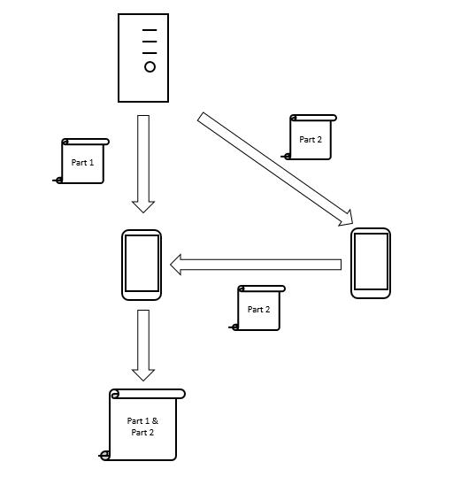
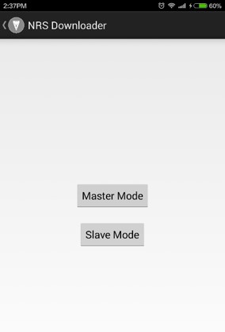
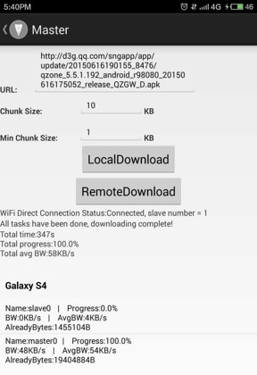
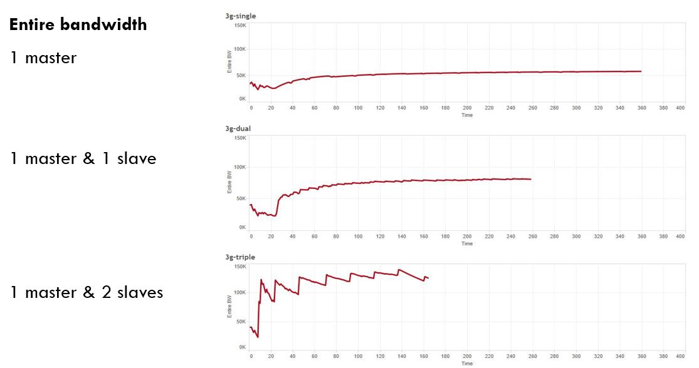

NRSDownloader
NRSDownloader, the network resource sharing downloader is an Android based program that aims at accelerating network transmission speed on mobile device by bandwidth aggregation on application layer. Current WLAN transmission is based on Wi-Fi Direct.
Main Idea
The main idea of this NRSDownloader is to separate a single file at the application layer and download these parts of file through multiple devices and assemble them to one final device in order to get a better transmission speed
Snapshot
 Effect
The effect of this implementation is quite obvious, with 1 additional device, the entire bandwidth rises to double of that with only 1 original device. Also with 2 additional devices, the entire bandwidth could go to higher. This extra bandwidth accquired could reach the maximum value of the WiFi interface.
Installation
Use Android Studio or some other IDE to build the project and then you get the executable Android application.
Usage
- Wi-Fi interface should be enabled on each end
- Launch the master end in your phone
- Launch the slave end in the phones you want them to assist the master
- Available slaves can be shown in master end, choose the slaves that you want to employ in the master to send connection request to them by click the name of slave on the screen
- After slaves accept the request, Wi-Fi Direct connection is built
- Click "Listen" button to make slave listen
- Key in the URL of the file you want to download in master, and click "RemoteDownload" to start the collaborative downloading
Contributing
- Fork it!
- Create your feature branch:
git checkout -b my-new-feature - Commit your changes:
git commit -am 'Add some feature' - Push to the branch:
git push origin my-new-feature - Submit a pull request :D
History
08/18/2015: First version released. Support collaborative downloading by employing multiple slaves to gain a high entire bandwidth.